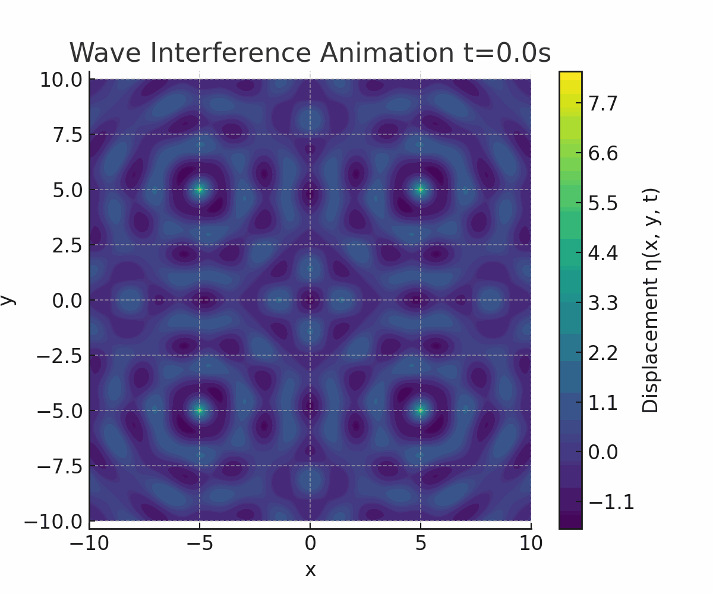

Interference Patterns on a water surface
A Deep Dive into Circular Wave Superposition and Interference Patterns
1. Theoretical Foundation
1.1 Single Disturbance Wave Equation
A point source located at \((x_0, y_0)\) on a water surface emits circular waves governed by the Single Disturbance Equation:
Where:
- \(\eta(x, y, t)\): Water surface displacement
- \(A\): Amplitude
- \(k = \frac{2\pi}{\lambda}\): Wave number
- \(\omega = 2\pi f\): Angular frequency
- \(r = \sqrt{(x - x_0)^2 + (y - y_0)^2}\): Distance from source
- \(\phi\): Initial phase
1.2 Superposition from Multiple Sources
For \(N\) coherent sources placed at the vertices of a regular polygon, the total displacement at any point is:
Where \(r_i\) is the distance from the \(i^{th}\) source to \((x, y)\), and \(\phi_i\) is its phase.
2. Regular Polygon Source Configuration
2.1 Chosen Polygon: Square
We analyze a square (4 vertices) centered at the origin with equal spacing and each vertex emitting coherent waves.
Let vertices be located at: - \(S_1 = (-d, -d)\) - \(S_2 = (-d, d)\) - \(S_3 = (d, d)\) - \(S_4 = (d, -d)\)
All sources share: - Same amplitude \(A\) - Frequency \(f\) - Wavelength \(\lambda\) - Phase \(\phi = 0\)
3. Simulation and Visualization
3.1 Python Simulation Code
Click to view the code
import numpy as np
import matplotlib.pyplot as plt
from matplotlib.animation import FuncAnimation
# Parameters
A = 1 # Amplitude
f = 1 # Frequency (Hz)
λ = 2 # Wavelength
k = 2 * np.pi / λ
ω = 2 * np.pi * f
φ = 0
d = 5 # Half-length of square side
sources = [(-d, -d), (-d, d), (d, d), (d, -d)]
# Grid
x = np.linspace(-10, 10, 400)
y = np.linspace(-10, 10, 400)
X, Y = np.meshgrid(x, y)
def compute_eta(X, Y, t):
eta = np.zeros_like(X)
for (x0, y0) in sources:
r = np.sqrt((X - x0)**2 + (Y - y0)**2) + 1e-6
eta += A / np.sqrt(r) * np.cos(k * r - ω * t + φ)
return eta
# Plot a snapshot
t0 = 0
Z = compute_eta(X, Y, t0)
plt.figure(figsize=(8,6))
plt.contourf(X, Y, Z, cmap='viridis', levels=100)
plt.colorbar(label='Displacement η(x, y, t)')
plt.title('Interference Pattern at t=0')
plt.xlabel('x')
plt.ylabel('y')
plt.axis('equal')
plt.show()
3.2 Key Visualizations
1. Animated Propagation (GIF)

Description: A dynamic visualization showing how the interference pattern evolves over time. Wavefronts radiate outward and continuously interfere, with the square symmetry preserved in the oscillations.
2. Constructive and Destructive Interference

This image is a 3D surface plot representing the displacement of a water surface over a two-dimensional grid of \(x\) and \(y\) values. The plot uses a color gradient from blue to red to indicate changes in the vertical displacement (z-axis) — with blue areas representing troughs (lower values) and red areas representing peaks (higher values).
3.1 Key Features:
- Axes:
- x-axis and y-axis range from approximately -5 to 5.
- The z-axis shows the displacement, ranging roughly between -2.5 to 2.5.
- Color Map:
- The plot uses a coolwarm colormap, giving a heatmap-like effect to indicate depth and elevation.
- Surface Shape:
- The surface has a wavy, undulating form with multiple peaks and valleys, simulating the complex nature of a water surface disturbed by waves or external forces.
- Title:
- The plot is titled "3D Water Surface Displacement", clearly indicating its purpose — to visualize dynamic changes on a fluid surface.
This kind of visualization is useful in simulations involving fluid dynamics, wave propagation, or surface deformation analysis.
4. Observations and Analysis
4.1 Interference Characteristics
- Constructive interference occurs at points equidistant from multiple sources.
- Destructive interference is observed at points with phase opposition from different wave contributions.
- Symmetry of the polygon determines the spatial periodicity of the pattern.
4.2 Parameters Affecting the Pattern
| Parameter | Effect |
|---|---|
| Wavelength (\(\lambda\)) | Affects spacing between interference fringes |
| Frequency (\(f\)) | Alters time dynamics of the pattern |
| Distance between sources | Changes pattern density and fringe separation |
5. Extensions
- Try different polygon configurations (e.g., triangle, pentagon)
- Introduce phase shifts between sources
- Explore non-equal amplitudes or frequencies
- Model nonlinear effects or surface damping
6.Conclusion
This simulation vividly illustrates how wave superposition from symmetric point sources leads to rich, predictable interference patterns. The square layout results in a periodic, symmetric wave field that reflects the coherence and geometry of the sources.